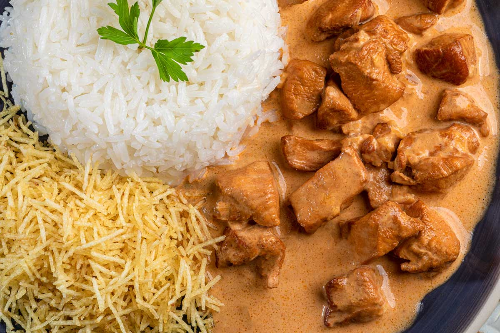

Strogonoff

Aenean dictum, magna a maximus eleifend, orci urna dignissim dui, at molestie felis dolor id nisi. Cras in nisl libero. Praesent sit amet arcu vel nunc tempus placerat. Etiam non rutrum dolor. Aliquam erat volutpat. Donec pretium volutpat ante non molestie. Nunc nec eros in arcu suscipit aliquam. Maecenas non efficitur elit. Suspendisse magna nisi, posuere at porta et, congue eu arcu. Pellentesque pellentesque interdum congue.
Ingredients
- 2 cups all-purpose flour for coating
- Salt and pepper to taste
- 4 skinless, boneless, chicken breast halves
- 1 tablespoon butter
- 2 cups of fresh slices mushrooms
- 1 (10.5 ounce) can condensed cream of chicken soup
- 1 ¼ cups half-and-half cream
- 1 (1 ounce) package dry onion soup mix
- 2 tablespoons chopped fresh parsley
- 2 cloves garlic, minced
- 1 teaspoon browning sauce
- ¼ teaspoon ground nutmeg
- 1 cup sour cream
- ⅛ cup chopped green onion for topping (Optional)